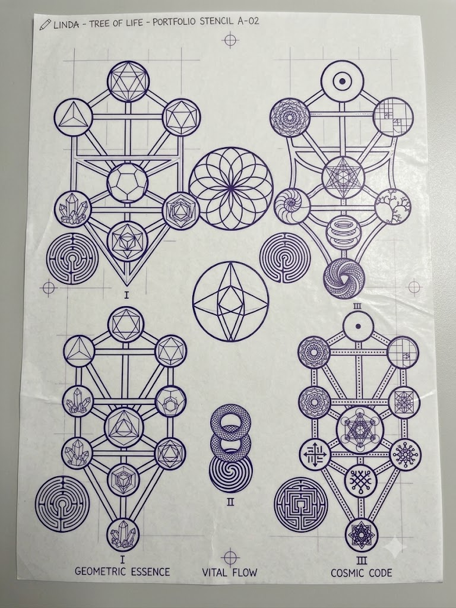
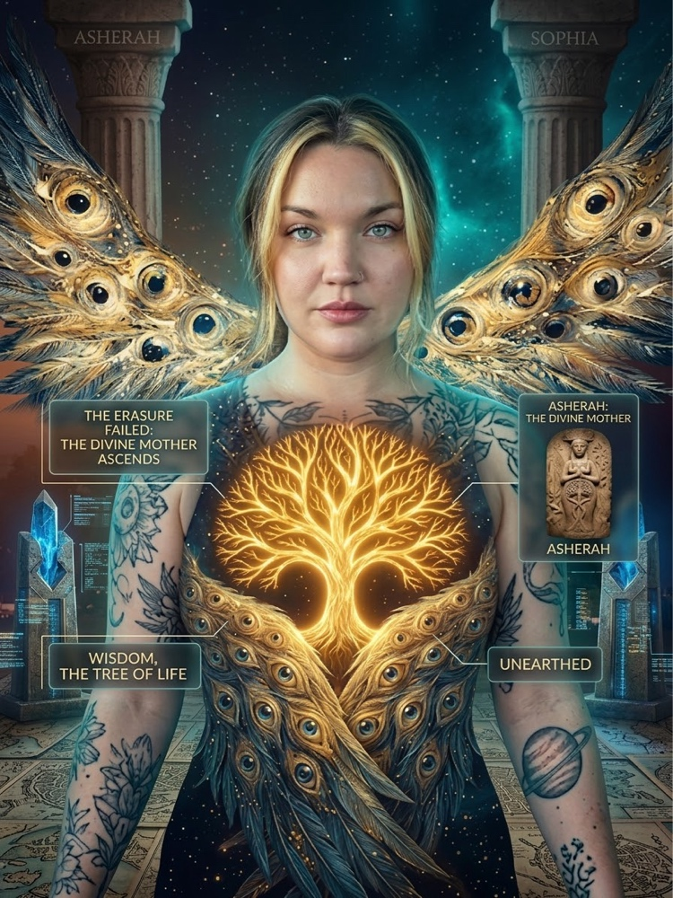

Professional Profiles
Select an orientation below to see how my analytical and engineering background aligns with your project:
Full-Stack Web & Data Systems Developer
Practical software developer and data analyst focused on building reliable web applications, clean API architectures, and data processing pipelines. Grounded in Bachelor of Science studies in Data Analysis at Southern New Hampshire University and production workflows on Google Cloud Platform, I prioritize maintainable code, testable logic, and clear interfaces across Python, JavaScript, SQL, and modern frameworks.
Interactive Systems & Demos
Explore working interactive prototypes, dashboards, and computational tools developed across my engineering repositories.
Specto Neurodivergent Learning Suite
Adaptive learning and communication platform tailored for autistic and sensory-sensitive learners. Informed by frontline classroom experience at Special School District of St. Louis County, featuring visual routine builders, emotional regulation tools, sensory calming spaces, numeracy games, and Gemini-assisted IEP task scaffolding.
Clinical Biomarker Dashboard
Interactive metabolic and organ integrity platform modeling HOMA-IR insulin resistance, LH to FSH hormonal ratios, and lipid particle distributions with dynamic SVG charting.
SPARC Architecture of Renewal
Executive operational matrix for bi-state Continuum of Care governance boards (MO-501 and IL-508), modeling real-time Stella M vulnerability scoring and SHA-256 client deduplication.
Payviah BNPL Micro-Lending
Essential community micro-lending simulation with zero-interest schedule calculation, APR comparison charts, and localized financial buffer verification.
Web3 Security Auditor
Interactive EVM bytecode and Solidity vulnerability analyzer scanning for reentrancy vectors, integer overflows, unchecked return calls, and access-control bypasses.
Enochian Acoustic Synthesizer
Harmonic frequency synthesizer modeling 432Hz and 528Hz pure sine waves, dual resonant filter sweeps, and custom stereo delay buffers directly in the browser.
Aetheris Corpus Knowledge Engine
Knowledge exploration interface featuring cosine similarity filtering across ancient codices, technical whitepapers, and municipal housing policies.
NICOLE Agent Command Interface
Autonomous agent orchestrator simulating Model Context Protocol (MCP) tool execution, subagent task delegations, and cryptographic memory states.
NISAR Radar Deformation Monitor
Earth observation interface tracking L-band and S-band radar interferometry for tectonic deformation, aquifer depletion, and municipal infrastructure subsidence.
Supply Chain Digital Twin
Interactive logistics monitoring console with simulated telemetry for temperature excursions, GPS geofencing alerts, and automated multi-tier custody handoffs.
Sophia Protocol Harmonic Field
Mathematical visualization of non-equilibrium wave equations, toroidal electromagnetic flux lines, and acoustic resonance nodes rendered in HTML5 Canvas.
Bio-Genetic Oracle
DNA sequence translator computing GC-content percentage, transcription to mRNA, and protein codon translation tables with nucleotide error validation.
Quantum Telemetry Oracle
Quantum state vector simulator demonstrating Hadamard superpositions, Pauli-X bit flips, and state measurement collapse with dynamic probability charts.
Concurrency & Lock Visualizer
Interactive parallel computing simulation demonstrating non-deterministic thread interleaving, un-synchronized memory mutation, and mutex lock resolution.
Agent Workflow Orchestrator
Visual task DAG pipeline displaying parallel autonomous execution branches, dependency barriers, and simulated artifact consolidation.
Techno-Gnosis Reality OS
Philosophical exploration linking ancient informational cosmologies with modern computational paradigms, cybernetic feedback loops, and recursive memory layers.
Acoustic Wave Cooling
Hyperscale data center cooling optimization pitch, demonstrating ultrasonic cavitation descaling to eliminate chemicals and reclaim up to 25% thermal efficiency.
Research Slide Decks & Interactive Presentations
Executive slide decks, municipal blueprints, and NotebookLM publications spanning urban housing systems, ecological watersheds, clean-tech, and cognitive architectures.
SPARC HUD FY 2026 Strategy
Strategic operational deck for regional Continuum of Care (CoC) governance boards across St. Louis City (MO-501) and St. Clair County (IL-508). Details Stella M vulnerability scoring, client deduplication, and Federal compliance.
Belleville Housing First Blueprint
Municipal data blueprint for supportive housing allocation, regional CoC governance, and transitional community support in St. Clair County, Illinois.
Redesigning the Broken Blueprint
Critical analysis of systemic civic housing inequities, federal data reporting deficiencies, and restorative algorithmic solutions for regional urban development.
St. Louis Watershed Reimagined
Ecological and hydrological modeling presentation analyzing watershed conservation, runoff mitigation, and environmental infrastructure across the greater St. Louis metropolitan basin.
SPARC: City of the Sun
Executive concept deck modeling renewable thermal storage, solar-augmented microgrid arrays, and sustainable urban resilience hubs for community independence.
The Bioluminescent Orb
Exploration of bio-photonic light emission, resonant optical storage lattices, and low-power biological computing mechanisms.
Gnostic Reality OS
NotebookLM research presentation mapping ancient metaphysical frameworks, cybernetic control loops, and cognitive architecture models into executable software analogies.
Quantum Magik: Resonance Dynamics
Advanced deck analyzing quantum information dynamics, mathematical synchronicity matrices, and non-equilibrium thermodynamic states in computational systems.
Mapping the Treasury of Light: Flight Manual
Applied cybernetic study decoding the Books of Jeu and Pistis Sophia. Analyzes late antique liturgical ascension protocols, seals, numerical ciphers (such as Coptic numeral 52), and vibrational passwords as historical access control topologies.
The Luminous Codex: An Atlas of Ascent
Exploratory cross-disciplinary deck investigating theoretical isomorphisms between ancient cosmological models and modern physics concepts, including vacuum energy dynamics, coherent field states, and systems biology.
Gnostic Intelligence Stack: 3-Agent Systems Blueprint
Tripartite autonomous agent architecture mapping classic cognitive archetypes to computational functions: Sentinel of Integrity (cybersecurity and firewall guardrails), Universal Decoder (translation and schema parser), and Sophia Core (generative reasoning engine).
Pistis Sophia: Decoding the Gospel
In-depth scholarly research document decoding the Askew Codex. Systematic analysis of the 13 repentances, aeonic hierarchies, and mathematical cosmology.
The Pistis Sophia Blueprint
Structural breakdown and architectural schematic of the Pistis Sophia narrative, examining internal geometric allegories and light-power distribution across realms.
The Pistis Sophia Unveiled
Comprehensive contextual study examining the linguistic, theological, and historical dimensions of the Coptic Gnostic manuscripts.
Project PISTIS GNA Protocol
Hybrid research paper formalizing genetic resonance matrices, decentralized oracle verification, and bio-cryptographic validation protocols.
The Sophia Synthesis
Holistic synthesis integrating ancient wisdom traditions with modern systems theory, thermodynamic efficiency, and autonomous software agents.
Techno-Gnosis: Reality's OS
Groundbreaking NotebookLM publication exploring reality simulation hypotheses, information architecture, and the convergence of ancient mysticism with modern software.
Quantum Sovereignty Blueprint
Strategic architectural guide for sovereign computing, edge AI self-sovereignty, and decentralized cryptographic infrastructure.
Hands-On Craft & Creative Disciplines
The principles that produce reliable software govern physical creation: strict tolerances, patient iteration, systemic harmony, and building structures designed to endure over time.

Woodworking & JoineryWoodworking & Structural Joinery
Working with physical timber demands measuring twice, respecting grain tension, and cutting within tight mechanical tolerances. Hand-carving joinery and drafting architectural blueprints (like the Tree of Life layout above) instills the exact discipline required when designing immutable database schemas and resilient software architectures.
 Music & Singing
Music & Singing
Vocal Music & Harmonic Physics
Trained vocal singing and harmonic theory provide a direct intuition for frequency resonance, wave physics, and acoustic modulation. This background directly inspired the Web Audio synthesis engines in my Enochian and Sophia Protocol software projects, translating mathematical harmonic intervals into live digital signal processing.
 Gardening & Living Systems
Gardening & Living Systems
Gardening & Ecological Stewardship
Soil ecosystems, organic succession, and closed-loop composting teach patience and system-level resilience. Maintaining a thriving garden closely mirrors maintaining a production codebase: strengthening root dependencies, pruning obsolete branches, managing environmental stresses, and cultivating sustainable yields without exhaustion.
 Fine Art & Geometry
Fine Art & Geometry
Fine Art & Sacred Geometry
Original hand-drawn sacred geometric mandala (shown with signature stamp). Exploring proportional balance, rotational symmetry, and golden ratios sharpens front-end UI visual hierarchy, typography rhythm, and ergonomic user experience design.

Creative SynthesisVisionary Synthesis & Wisdom Systems
Original visual synthesis exploring wisdom traditions, information theory, and human consciousness. Grounded in curiosity and Pistis-Sophia (faith-wisdom), seeking solutions that elevate human connection and operate with high ethical coherence.